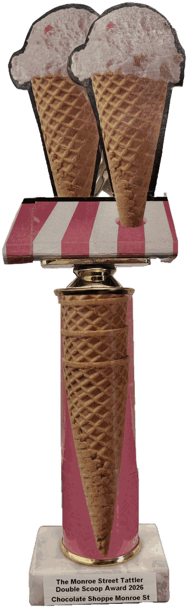
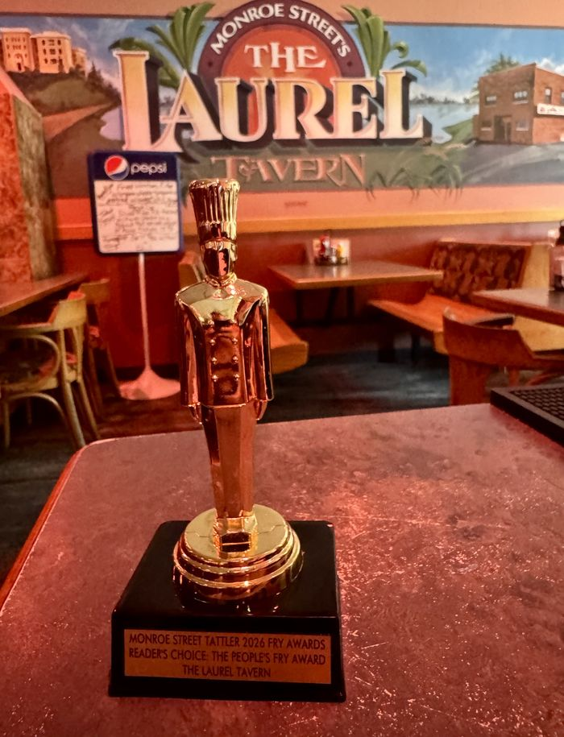
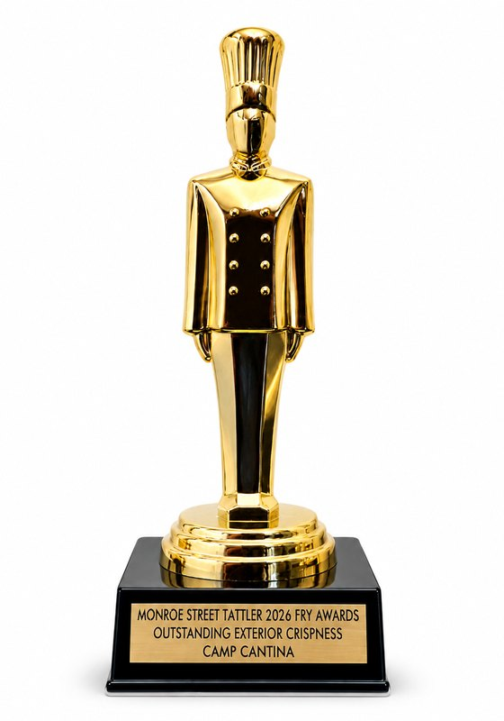
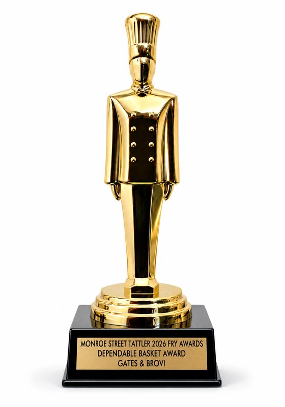
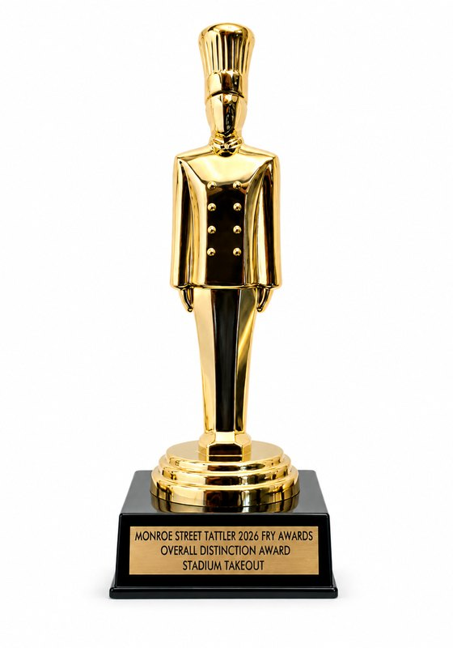
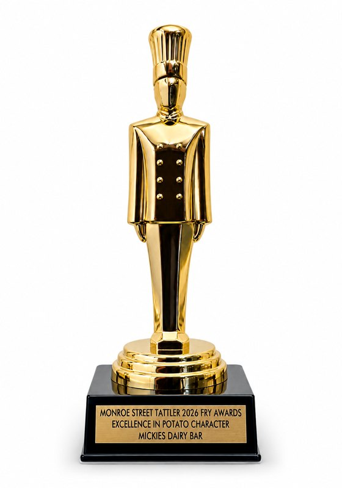
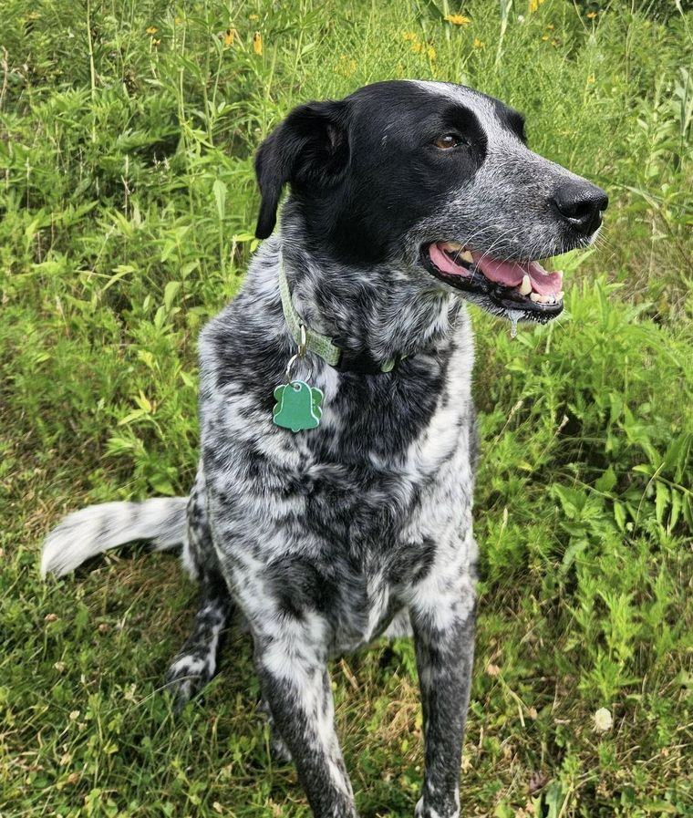
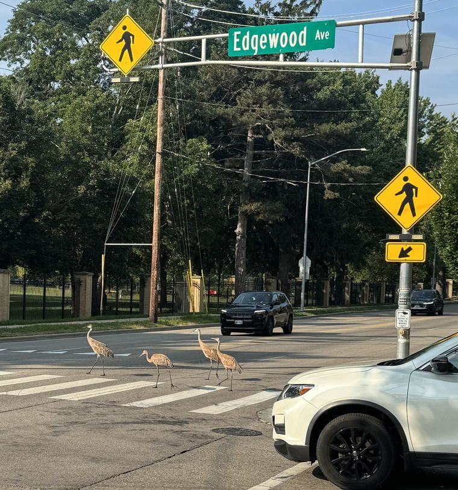
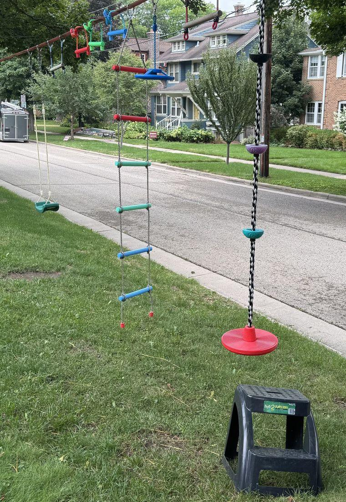
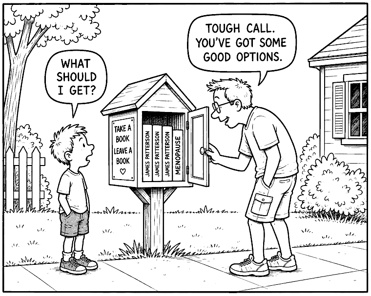

News so hyperlocal, it's amazing anyone takes an interest.
Our biggest giveaway yet is inside.
Fifty-six flavors. One Commission. The neighborhood now has answers.
Someone had to do it.
In what can only be described as the most ambitious act of neighborhood journalism since the Fry Report, the Monroe Street Tattler Culinary Commission sat down at Chocolate Shoppe and did not get up until all 56 flavors had been tasted, rated and, in several cases, argued about.
The panel included adult Commissioners and Junior Correspondents ages 7 to 10. Over nearly two hours, Chocolate Shoppe staff accommodated the pre-arranged investigation without visible complaint, providing roughly 448 tasting-spoon samples.
Before tasting could begin, all Commissioners and Junior Correspondents were formally sworn in. Each raised an ice cream spoon and pledged to try the ice cream, tell the truth, remain brave about weird flavors, and never let another member of the panel tell them what tastes good.
With spoons held aloft, several of them higher than strictly necessary, the Commission was certified and the investigation commenced.
Each flavor was tasted and rated independently before the panel compared notes. This procedure held for approximately four flavors.
Super Human looked like Play-Doh and tasted like several ideas happening at once. Cherry, Blue Moon and vanilla all made appearances, while one taster reported a faint tingling on the tongue. Nobody could quite explain it, which only improved its superhero credentials.
Cotton Candy Twist prompted an immediate and unusually efficient assessment from one Commissioner: "Fair vibes."
Mint Avalanche produced one of the investigation's earliest useful comparisons. A Junior Correspondent considered the matter briefly before reporting: "It tastes like my toothpaste, but a lot better."
By Halley's Comet, the caramel-and-malt one, any pretense of quiet independent judgment had collapsed entirely. "THIS IS THE BEST ONE YET," announced one Junior Correspondent, in what would prove to be the first of several final rulings. Other tasters independently declared it their favorite so far.
The Commission considers this evidence of a functioning process.
A Junior Correspondent sniffed Exhausted Parent and correctly identified it as their parents' cold brew, a finding that reflects on both the flavor and the household.
Plain Chocolate prompted perhaps the day's least explained finding when a Junior Correspondent declared it "a mom flavor."
Zanzibar Chocolate divided the room along lines that already existed. The chocolate faction was unequivocal: "extremely good," and "if you like chocolate, this one is for you." One known chocolate skeptic said considerably less. Her face was entered into the record.
Then came Cr-Appley Ever After, and the volume changed. "Oh, I don't like that." "Ew." From across the table: "I'd order that again." "Might be the next one I get." Voices rose. Positions were restated more loudly. No minds were changed.
By this stage more than thirty flavors had come and gone. Several supposedly permanent favorites had already been quietly abandoned. Just past the halfway mark, at flavor thirty-four, Blackberry Lemon Bar stopped the proceedings. Before a single spoon went in, the table began making "oooo" noises over the lemon aroma. Then the spoons went in. For the first time all day, every Commissioner and every Junior Correspondent independently landed on the same finding: this was a favorite.
The matter was considered settled.
Twice the panel talked itself out of a flavor before tasting it. Matcha Green Tea was approached with open suspicion. Carrot Mango Italian Ice fared worse: "I hate all vegetables. But especially carrots."
The subsequent tastings did not support the initial objections. The investigation into Butter Pecan began with allegations of "old man ice cream." Those allegations were subsequently withdrawn.
By flavor forty-six, enthusiasm should reasonably have been in decline. Peanut Butter Cookie Dough woke the room back up anyway. "Best smell for miles." "Go for a second scoop."
Near the end, Espresso Almond Fudge produced the clearest demonstration of why this Commission seats both adults and children. An adult: "I love that one. Why don't I order this more?" A Junior Correspondent, same spoon, same table: "Never make me try this again."
Both findings stand.
Seeking additional expertise, the Tattler asked Chocolate Shoppe staff to identify a definitive favorite for the coveted title of 2026 Staff Pick.
Zoreo received a strong endorsement from one staff member, while another declined to commit, explaining that favorites tend to rotate.
The coveted 2026 Staff Pick remains vacant.
After careful tasting, solemn deliberation and the necessary application of Commission judgment, the following recognitions are awarded.
Bright blackberry, sharp lemon and buttery pieces of actual lemon bar. The first unanimous favorite of the investigation, and it never surrendered the position.
Graham cracker on the nose, caramel throughout, and enough mix-ins to earn immediate attention. "So, so, so good," reported one taster. A Junior Correspondent went further: "10 out of 10."
Mild, creamy and persuasive enough to convert several declared skeptics.
Unanimous. No further deliberation required.
The sleeper hit of the investigation. Bright mango, excellent texture and remarkably little evidence of the vegetable that had caused so much concern. Multiple tasters planned return orders.
Three Junior Correspondents independently concluded that sharing would not be in their interest.
Adult Commission: This $&@! Just Got Serious. Junior Correspondents: Me Want Cookie!
The adults chose a sweet-salty, mix-in-packed classic. The Junior Correspondents went straight for cookies, Oreo pieces and pure birthday-party energy. Different choices, same conclusion: if you're bringing someone to Chocolate Shoppe for the first time, start here.
Adults and Junior Correspondents independently arrived at the same conclusion: this one was excellent. It tasted like a creamy candy cane, with some tasters comparing it to a York peppermint patty without the chocolate. Even late in the investigation, the room lit up. Cross-generational consensus has been certified.
Caramel-apple-sucker nostalgia proved to be an acquired taste, and acquiring it appears to take about thirty years. Adults were enthusiastic. Most Junior Correspondents remained unconvinced. The divide remains unresolved.

Chocolate Shoppe staff deserve our sincere thanks for allowing this operation to occur at all, and for doing so with extraordinary patience and good humor. In recognition of this, Chocolate Shoppe has been awarded the esteemed and coveted Tattler 2026 Double Scoop Award.
If your go-to flavor didn't make the print report, don't panic. The Commission tasted all 56. The complete flavor-by-flavor findings are online, with additional tasting notes and more official recognitions.
Assemble your own panel, choose five flavors, issue your findings, and report back to the newsroom. Five flavors, not fifty-six.
Strong opinions are encouraged. Outside verification is the foundation of good journalism. Ice cream is no exception.
The Commission is recruiting Commissioners and Junior Correspondents for future investigations. No experience required. Strong opinions preferred. Contact MonroeStreetTattler@gmail.com if interested.
Since publishing the Monroe Street French Fry Report, shockwaves have continued to ripple through the neighborhood. The mailbag has not stopped. Readers wrote in with opinions, corrections, gravy-related grievances, and, more than anything else, love for one restaurant in particular.
One reader wrote in to say they had their engagement photos taken in front of The Laurel. No further explanation was offered, or needed.
The people have spoken, loudly and repeatedly, and the Tattler listens to volume above all else.
One reader felt so strongly about the honor that he sent us something longer than a letter. The Tattler is pleased to turn the page over to him.

Some places become part of your life without you quite realizing it at the time. For me, The Laurel is one of those places.
My relationship with The Laurel began when I was a student in Madison in the early '90s. It was the kind of neighborhood place where you could settle in after class, decompress, laugh with friends, and let the day slowly transition into evening. During graduate school, it became even more of a second home. Many of us would find our way there after classes, sometimes to talk about what we were learning, sometimes to complain about what we were learning, and sometimes to talk about absolutely anything other than school. Mostly relationship stuff, if I'm being totally honest.
Years later, life brought me back to Madison in a different role. I was no longer the graduate student leaving class. I was now the faculty member teaching it. And somehow, there was The Laurel again. It became one of my regular hangouts, a familiar place even though a lot in my life had changed.
I have since moved away from the area, but whenever I return to Madison, I try to make at least one visit to The Laurel. There is something comforting about walking back into a place that has been part of so many stages of your life.
Of course, there are also the important things: TouchTunes (seriously, how did I ever survive without it?), fried mushrooms, jalapeño poppers, and a menu that has somehow never disappointed me.
But the food, music, and drinks are only part of why I keep returning. The Laurel reminds me of friendships, conversations after class, celebrations, stressful semesters, laughter, and the strange experience of eventually becoming the professor instead of the student. It has been there through different stages of my life while somehow remaining unmistakably The Laurel.
There are restaurants you enjoy, bars you frequent, and then there are those rare neighborhood places that become something more.
For me, The Laurel will always be one of those places. Whenever I walk through the door, no matter how long I've been away, it feels a little bit like coming home.
Recipients, reportedly stunned, accept the Tattler's highest honors.




These individually engraved gold monuments to culinary excellence were made possible by an unsolicited reader contribution. The Tattler remains shaken by this extraordinary act of support. Readers are encouraged to look for these prestigious honors proudly displayed at winning establishments.
Camp Cantina has done something no business on this beat has ever done: responded to Tattler recognition with an actual, genuine giveaway.
Readers holding a first-run printed copy can redeem the coupon for one free small basket of fries during September. This is the first time in Tattler history a business has done this. The Commission does not expect it to happen again anytime soon.
Print edition only. Camp Cantina needs the paper coupon, not a screenshot of one.
Thanks to everyone who sent questions, comments and neighborhood intelligence our way. Keep them coming.
"I've only had [The Monroe Street Tattler] for 3 minutes and I deeply resonate with all observations."
The Tattler responds: Keep tattling.
Dear Editor,
Excellent report. Rigorous, well argued, and wrong about one thing.
I'm a Southerner, and I've never been to Mickies on principle. I have heard they put brown gravy on the Scrambler. Brown gravy is for roast beef or turkey. It has no business anywhere near breakfast. Breakfast gets white sausage gravy. This seems like something the Commission should investigate.
A Concerned Southerner
The Commission thanks the reader for raising what appears to be a sincerely held position on gravy.
As a reminder, the Commission's jurisdiction for the French Fry Report was limited exclusively to french fries, making this an unusual time to air grievances on unrelated matters. While Mickies received well-deserved recognition in that investigation, no findings were issued regarding gravy.
The Commission also recognizes the longstanding right of every diner to enjoy gravy in the manner they see fit, whether brown, white, or not at all.
As for Mickies, the Commission notes that its lines routinely stretch out the door in January, July, and nearly every season in between. Whatever position one takes on breakfast gravy, the neighborhood has clearly rendered its verdict on the restaurant itself.
The Commission therefore expresses no opinion on brown gravy, white gravy, or the boundaries separating the two. The matter remains unresolved, though it may warrant the convening of a future Breakfast Commission.
The neighborhood's most photographed dog opens up.

For our inaugural Featured Pet, meet Puddin', a neighborhood beauty with a complicated relationship with rules, squirrels and hamburger buns.
Puddin' takes her role in the family seriously. She considers following her human dad a full-time job and, remarkably, will not pass her four-year-old human sister on the stairs. Other household expectations are more negotiable. The no-dogs-on-the-guest-bed policy, for instance, is treated as a suggestion.
Her official makeup is 50% blue heeler, 25% golden retriever and 25% yellow lab, plus, somehow, 2% Dalmatian. Her family also suspects 2% raccoon. Testing remains inconclusive.
When she isn't following Dad, Puddin' hunts squirrels with a career success rate of zero, rests her head on inconveniently hard surfaces and keeps an eye out for unattended carbohydrates. Hamburger buns are a particular weakness.
Her lack of success with squirrels has not hurt her public profile. Strangers routinely tell Puddin' she's beautiful. Drivers have called out questions about her from their cars. One passenger even took her picture, most recently on Van Beuren in Vilas, proof that Puddin's fame, like this paper's coverage, does not stop at the Monroe Street border.
Puddin' remains available for squirrel patrol, bun inspection and compliments.
Know a pet with main character energy? The Tattler is now accepting nominations for future Featured Pet honors. No résumé required, though we won't discourage one. Email MonroeStreetTattler@gmail.com.


Traffic Miracle on Monroe!
A family of cranes was observed crossing a busy neighborhood intersection this week during morning rush hour. They activated the pedestrian crossing button, waited for traffic to yield, and proceeded through the marked crosswalk with confidence.
Sources on the scene report that traffic stopped for the birds, offering cautious evidence that local commuters do, in fact, recognize crosswalks under certain conditions. The cranes, having safely reached the other side, declined to comment.
Field Report
At Hillington Green Park, known locally to some as "Triangle Park," multiple fathers report being routinely told they are "great dads" by older passersby.
One neighborhood source, when asked what prompted the praise, said, "He appears to have shown up and remained for the entire duration."
Airspace Update
A bald eagle has been spotted over Vilas twice in recent weeks. Between this and the cranes, local birds appear increasingly comfortable with public life.
Neighborhood Listserv Reaches Its Final and Intended Purpose
No further updates at this time.
Backyard Athletics
What appears to be a homemade miniature Ninja Warrior course has emerged on Adams Street, strung between two trees in a neighborhood front yard and complete with a swing, ropes, hanging handles and a step stool.
Sources have not confirmed whether any children at the property have formally qualified for American Ninja Warrior, though preparations appear well underway.
Get the Tattler by email or free neighborhood delivery. Sign up here.
The Tattler is free. Printing, regrettably, is not. Chip in or become a recurring supporter.
Find printed copies in Free Little Libraries and neighborhood businesses. Want to become a distribution point or run an ad? Get in touch.
Got a tip, neighborhood lore, outrageous history or something we should investigate? Email MonroeStreetTattler@gmail.com.
We're mapping neighborhood water bowls and treat jars for dogs and their people. Find the map or add a stop.

A neighborhood institution, effective immediately.
The Monroe Street Tattler. We cover the people, places, peculiarities and extremely minor developments that make a community interesting, with considerably more seriousness than the circumstances require.